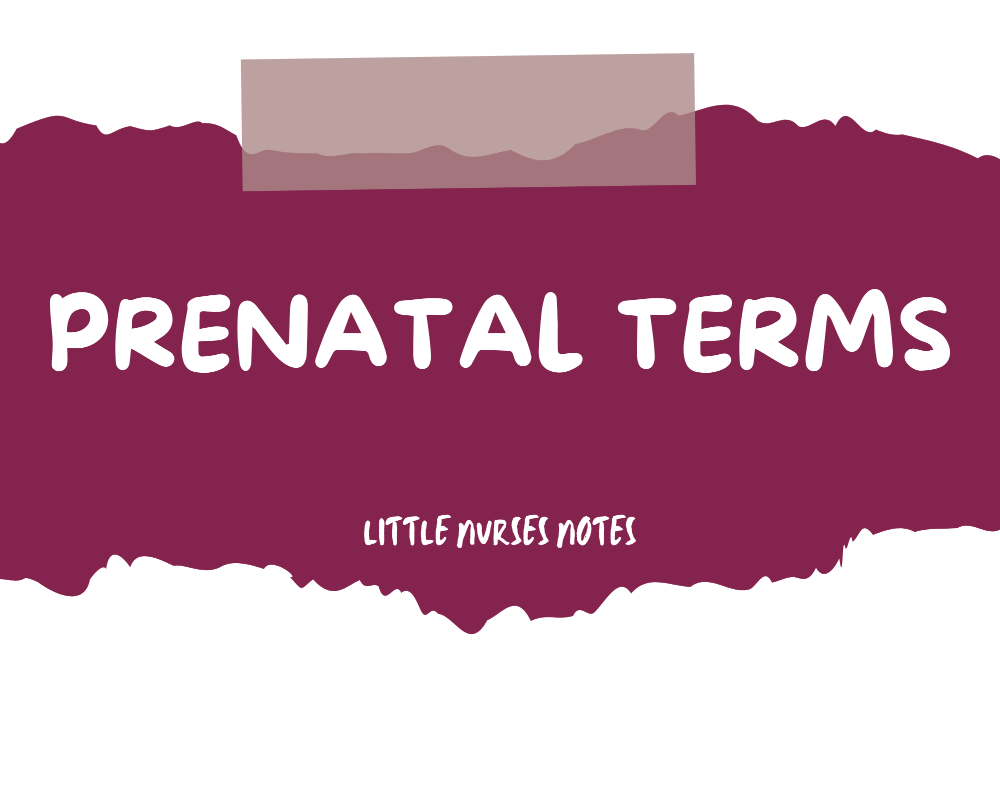
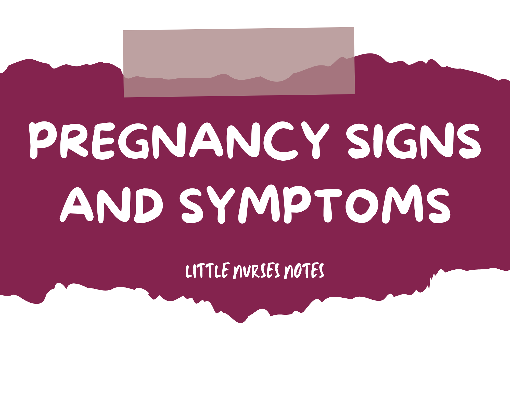
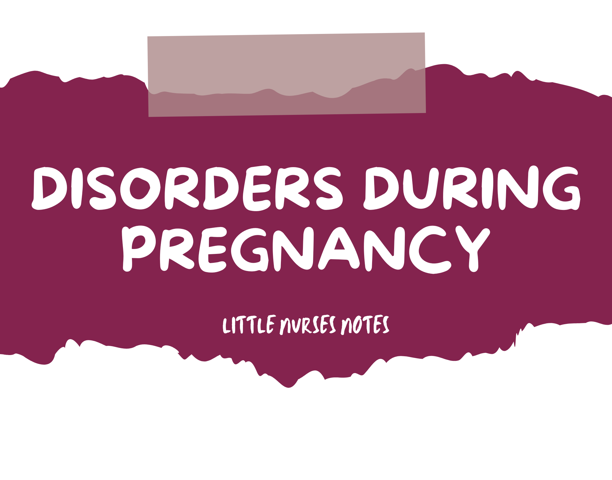

MATERNAL AND CHILD HEALTH
Hola, future nurses! There is no doubt that nursing school is hard, but fear not! We have prepared this website especially for you.
This contains the basic topics a nurse must know before entering the battle in healthcare.
Because, as stewards of compassion and care, we know it is important to read and always go back to the basics. Enjoy studying and remember,
in the pursuit of success, it's not simply about attaining,
but about earning every step of the way!
<Medical Acronyms
- IUP/IUFD: Intrauterine pregnancy / intrauterine fetal demise
- SAB: Spontaneous abortion
- TAB: Therapeutic abortion
- LMP: Last menstrual period
- ROM: Rupture of membranes
- SROM: Spontaneous rupture of membranes
- AROM: Artificial rupture of membranes
- PROM: Prolonged rupture of membranes (>24 hours)
- PPROM: Preterm premature rupture of membranes
- SVD: Spontaneous vaginal delivery
- FHR: Fetal heart rate
- EFM: Electronic fetal monitoring
- US: Ultrasound transducer (detects FHR)
- FSE: Fetal scalp electrode (precise reading of FHR)
- IUPC: Intrauterine pressure catheter (strength of contractions)
- LTV: Long term variability
- SVE: Sterile vaginal exam
- MLE: Midline episiotomy
- NST: Non-stress test
- CST: Contraction stress test
- BPP: Biophysical profile
- VBAC: Vaginal birth after cesarean
- AFI: Amniotic fluid index
- BUFA: Baby up for adoption
- NPNC: No prenatal care
- PTL: Preterm labor
- BOA: Born on arrival
- BTL: Bilateral tubal ligation
- D&C / D&E: Dilation & curettage / dilation & evacuation
- LPNC: Late prenatal care
- TIUP: Term intrauterine pregnancy
- VMI / VFI: Viable male infant / viable female infant
- EDB: Estimated date of birth
- EDC: Estimated date of confinement
- EDD: Estimated date of delivery
Prenatal Terms
- Gravida / Gravidity: A woman who is pregnant / the number of pregnancies
- Nulligravida: Never been pregnant
- Primigravida: Pregnant for the first time
- Multigravida: A woman who has had 2+ pregnancies
- Parity: The number of pregnancies that have reached viability (20 weeks of gestation) whether the fetus was born alive or not
- Nullipara: Zero pregnancies beyond viability (20 weeks)
- Primipara: One pregnancy that has reached viability (20 weeks)
- Multipara: Two or more pregnancies that have reached viability (20 weeks)
- Preterm: Pregnancies that have reached 20 weeks but ended before 37 weeks
- Term: Pregnancies that have lasted between week 37 and week 42
- Early Term: 37 – 38 6/7
- Full Term: 39 – 40 6/7
- Late Term: 41 – 41 6/7
- Postdate/Postterm: A pregnancy that goes beyond 42 weeks
GTPAL
- Gravity: The number of pregnancies
- Term: The number born at term
- Preterm: The number of pregnancies delivered beginning with the 20th - 36 6/7th weeks of gestation
- Abortion: The number of pregnancies delivered before 20 weeks gestation
- Living Children: The number of current living children
Pregnancy Signs and Symptoms
Presumptive
- P - Period Absent (Amenorrhea)
- R - Really tired
- E - Enlarged breasts
- S - Sore breasts
- U - Urination increased (urinary frequency)
- M - Movement perceived (quickening)
- E - Emesis & nausea
Probable
- P - Positive (+) pregnancy test (high levels of the hormone: hCG)
- R - Returning of the fetus when uterus is pushed w/ fingers (ballottement)
- O - Objective
- B - Braxton Hicks contractions
- A - A softened cervix (Goodell's sign)
- B - Bluish color of the vulva, vagina, or cervix (Chadwick's sign)
- L - Lower uterine segment soft (Hegar's sign)
- E - Enlarged uterus
Positive
- F - Fetal movement palpated by a doctor or nurse
- E - Electronic device detects heart tones
- T - The delivery of the baby
- U - Ultrasound detects baby
- S - Seeing visible movements
Stages of Labor
- Stage 1: Stage of Cervical Dilation
- Latent: 0-3 cm
- Active: 4-7 cm
- Transitional: 8-10 cm
- Stage 2: Stage of Expulsion
- Stage 3: Placental Stage
- Stage 4: Maternal Homeostatic Stabilization Stage
Naegle’s Rule
Used for estimating the expected date of delivery (EDD) based on LMP (last menstrual period)
Formula: Date of Last Menstrual Period – 3 Calendar Months + 7 Days + 1 Year
Disorders During Pregnancy
- Ectopic Pregnancy: occurs when an ovum implants outside of the uterus
- Placenta Previa: occurs when the placenta partially or totally covers the cervical opening
- Abruptio Placenta: is the premature separation of the placenta from the uterus
- Gestational Diabetes: Impaired glucose tolerance that occurs during the 2nd or 3rd trimester of pregnancy
- Gestational Hypertension: blood pressure >140/90 mm Hg after 20 weeks gestation with no proteinuria (excess protein in the urine)